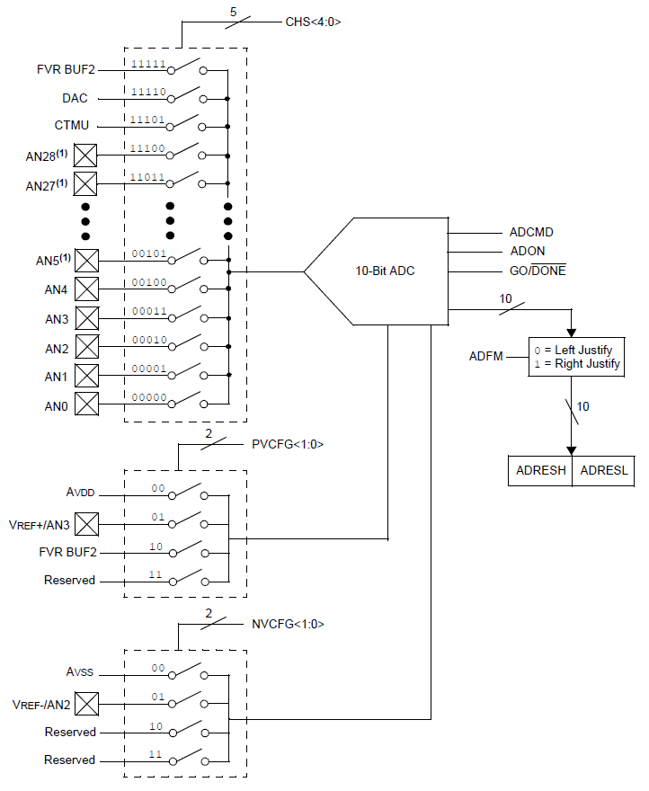
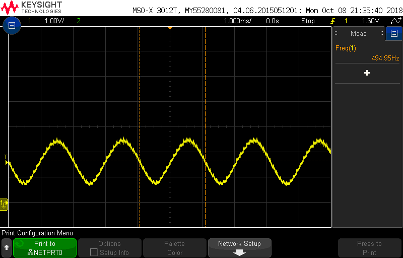
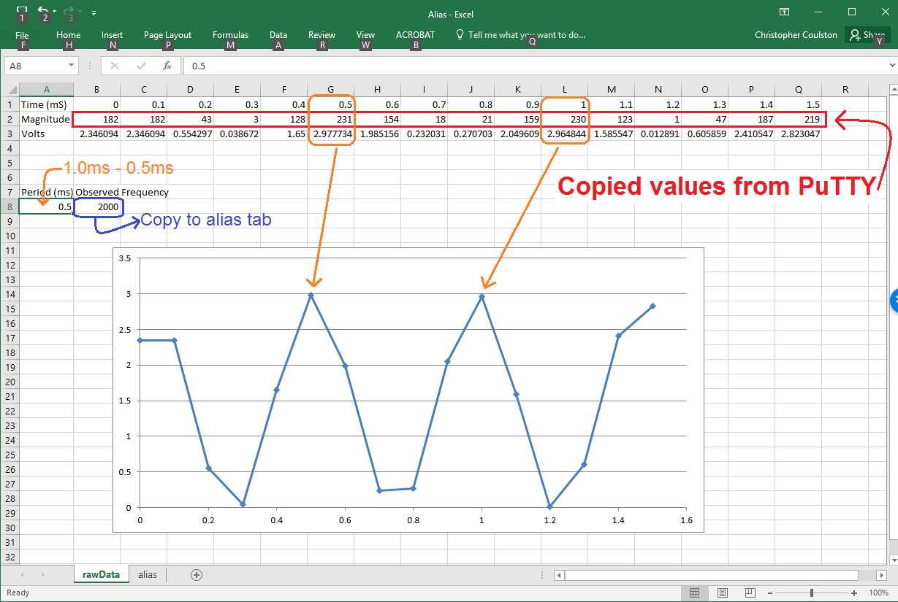

EENG 383
Lab 8 - MicrophoneRequirements
Working in teams of two, read through the following lab activity and perform all the actions prescribed. You do not need to document bullet items. Make a record of your response to numbered items and turn them in a single copy as your teams solution on Canvas using the instructions posted there. Include the names of both team members at the top of your solutions. Use complete English sentences when answering questions. If the answer to a question is a table or other piece of art (like an oscilloscope trace or a figure), then include a sentence explaining the piece of art. Only include your answers, do not include the question-text unless it is absolutely needed.Objective
The objective of this lab is to gain an understanding of how samples are recorded from the microphone and examine how aliasing operates in a sampled system.External Hardware
For this lesson, you will be using the microphone on the development board. Attached to this microphone is a 1st order low pass filter acting as an antialias filter in front of the RA5 (analog) input to the PIC 18F26K22. Let's start by investigating the microphone and filter.Electric Mic
Access the Bill of Materials for the development board from an earlier lab, find the DigiKey part number for the Electric mic and download its technical documents from Digikey.- In your own words, describe the Frequency Response graph on page 2 of the technical documents. You may want to consult the Wiki on Frequency Response.
- What is the relationship between the input and output signals at 0db?
OPA344
In this section you will examine the low pass filter stage of the microphone subsystem. The following figure is taken from the schematic and annotates sections of the filter for further discussion.
Our op-amp is setup as a Low Pass Filter. This op-amp configuration combines gain with a low pass filter. The gain is required to order to boost the small signal coming from the microphone into a measurable signal. The low pass filter helps reduce unwanted alias from folding down into the signal of interest.
- Use the link above to find the equations associated with our low pass filter. Calculate the gain of our LPF?
- Calculate the corner frequency, f_c, in Hz of our LPF.
- You apply a 1v peak-to-peak sine wave with frequency of 33khz, calculate the amplitude of the output from the LPF.
Internal Subsystem
The PIC has an analog to digital converter (ADC) subsystem which takes an analog input between 0 and 3.3v and converts the analog voltage into number, called the converted value between 0 and 1023. The conversion from voltage to number is ratiometric, meaning that the output is directly proportional to the input. For example, a 1V input to the ADC will produce a 10-bit output called x in the derivation below.3.3v 1 v ---- = --- x = 310.3 1024 xFor practical reasons we will keep only 8 of the 10 bits available from the ADC output. At first glance the hardware organization in the PIC, shown in the image below, may look pretty intimidating. However, its not too bad if you split the hardware into four submodules.
- The left dashed box with lots of "AN" inputs is a multiplexer. The multiplexer chooses one of its inputs (based on the CHS<4:0> values) and sends it to the output.
- The module labeled 10-Bit ADC is the actual analog to digital converter.
- The 10-bit converted value output from the ADC is sent to a pair of 8-bit registers called ADRESH:ADRESL. Since 10-bits does not fit perfectly inside a 16-bit register (there are 6 unused bits), the 10-bit value will either be pushed left or right inside the 16-bit register. This is called the converted values justification.
- The fourth sub-module is the pair of dashed boxes with PVCFG<1:0> and NVCFG<1:0> as input. This pair of multiplexers selects the positive/negative reference voltages used by the ADC.

Let's examine the signals that are associated with each of the ADC inputs in the following question.
- Complete the table below by looking up the relationship between the
ADC channels and the I/O pins using the pin summary on page 6 of the
PIC18(L)F2X/4XK22 Data Sheet posted on the class web page. Use the
schematic and layout, posted on the class web page, to determine if
there are any devices attached to each of the I/O pins. Provide the
identity of the device or write "Free" if there is no device. An easy
way to determine this is to look at the pin-header array surrounding
the PIC on the development board
layout. If there is no wire (red/blue trace) leaving
the header, then that I/O pin is not connected to any device and is free.
If an ADC channel does not have an associated pin, write "None" in the
I/O pin column and "N/A" in the Attached Device column.
ADC channel I/O pin Attached Device AN0 RA0 Free AN1 AN2 AN3 AN4 RA5 Microphone AN5 AN6 AN7 None N/A AN8 AN9 AN10 AN11 AN12 AN13 AN14 AN15 AN16 AN17 AN18 AN19
Firmware Organization
Build a project using the following MCC configuration:- Build a project using the following MCC configuration:
- Click on "Clock Control" in the Project Resources section of the Resource
Management tab (left side of the screen). Then, in the Clock Control tab
- System Clock Select: FOSC
- Internal Clock: 16MHz_HFINTOSC
- Software PLL Enabled: ✓
- In the Device Resources section of the Resource Management tab, scroll down and expand the "Timer" list. Double click TMR0.
- In the Device Resources section of the Resource Management tab, scroll down
and expand the "UART" list. Double click UART.
- In the UART(None) menu that pops up, set the following:
- UART PLIB Selector: EUSART1
- In the Device Resources section of the Resource Management tab, scroll down and expand the "ADC" list. Double click ADC.
- In the Project Resources section of the the Resource Management tab, expand
the Drivers → Timer options if not already expanded, and click on TMR0.
- Timer Enable: ✓
- Timer Mode: 16-bit
- Clock Source: FOSC/4
- Prescaler Assignment: not_assigned
- Requested Period: 100µs
- TMR Interrupt Enable: ✓
- Generate TMR ISR: ✓
- In the Project Resources section of the the Resource Management tab, expand
the UART option and click on UART1.
- Requested Baudrate: 9600
- Data Size: 8
- Flow Control Mode: None
- Redirect Printf to UART: ✓
- Interrupt Driven: □
- In the Project Resources section of the the Resource Management tab, expand
the ADC option and click on ADC.
- CCP Dependency Selector: CCP5
- You can validate this step by checking that CCP5 was added as a driver to the project.
- Enable ADC: ✓
- Result Alignment: left
- Positive Reference: VDD
- Negative Reference: VSS
- Positive Input Channel: AN4
- Acquisition Time: 8
- Auto Conversion Trigger: CCP5
- Conversion Clock Select: FOSC/64
- ADI Interrupt Enable: □
- CCP Dependency Selector: CCP5
- Click on "Pins" in Project Resources. In the Pin Grid View tab (bottom of the screen) click on the blue open lock in the Port A 6 column of the "output" subrow in the "Pins" group of rows. This space will change to a green closed lock.
- In the Pin Grid View tab click on the blue open lock in the Port A 5 column of the "ANx input" subrow in the "ADC" group of rows. This space will change to a green closed lock.
- Open the Pins tab (right side of the screen). Click on the Custom Name text box in the RA6 row and change the name of RA6 to "TEST_PIN"
- In the Pins tab, change the name of the RA5 pin to "MIC_PIN"
- Click on the "Generate" button in the Project Resources area of the project manager window. If you get a MCC pop-up asking you to confirm that the configuration has warnings, click Yes. The warning is about configuring CCP5 so that whenever its associated flag is set the ADC module performs a conversion. In the MCC Save Configuration File, keep the defaults and Save. Anytime that you make a change to the configuration you must re-generate the supporting files by clicking on the generate button,
- If you are using MCC Melody, once you generate the MCC files, follow the directions here to patch you MCC files to work properly. If you do not do this, your timer period will be wrong and you will get incorrect answers later in your lab.
- Click on the Project tab in the project manager window, expand the Source Files folder and double click main.c to open it in the editor window.
- Replace the contents of main.c with
- Look at the code in the ISR and the configuration of the timer subsystem to determine how frequently thes microphone is being sampled. Show the dimensional analysis used to derrive the answer. You could also connect the oscillope to RA6 (TEST_PIN) to verify your answer.
Firmware Experiments
Capture a waveform of a whistle using the following procedure:| Ch1 probe | RA5 |
| Ch1 ground clip | Dev board ground loop |
| Horizontal (scale) | 1 ms |
| Ch1 (scale) | 1V |
| Trigger mode | Auto |
| Trigger source | 1 |
| Trigger slope | ↑ |
| Trigger level | 1.5V |
If the lab is noisy, the oscilloscope may retrigger on some background noise. In order to prevent this try using the "Single" button in the upper right of the oscilloscope. This will cause the oscilloscope to trigger once and not record any more information until another run control button is pressed. Thus you can confidently view the waveform without having a loud noise in the room retrigger the scope and ruin your whistle waveform. Make sure to return the oscilloscope back to Run mode in order to restart signal acquisition.
| Oscilloscope capture of a whistle. | Oscilloscope capture of a finger snap. |
|  |  |
- Align Ch 1 on the second lowest reticule,
- Align the horizontal position at the second left-most reticule,
- Clear all menus off the bottom of the screen
[↑Back] - Screen shot the screen on USB:
[Save] → Save → Format → 24-bit Bit... (*.bmp) [Save] → Save → Press to Save
- Capture a whistle waveform, store it on a thumb drive and include it in your report.
- Capture a finger snap waveform. It should look like a damped sinusoid. Include it in your report.
- Whistle three more times in different pitches and record the
frequency you measure on the oscilloscope. Do not whistle directly
into the microphone as the volume will saturate the output.
Whistle pitch Frequency Low Medium High

- Connect a proper signal generator cable to the function generator yellow BNC connector labeled "CH1",
- If the [Sine] function key is not illuminated, press the [Sine] key to illuminate it,
- Press the [Amp] soft key twice to highlight "HiLevel",
- Enter 3.3 on the numeric keypad, and then press the "V" (volt) softkey
- Press the [loLevel] soft key once,
- Enter 0 on the numeric keypad, and then press the "V" (volt) softkey
- Press the [Freq] soft key once,
- Enter 1.0 on the numeric keypad, and then press the "kHz" softkey. Press the output1 key if it is not already illuminated.
- Connect a proper oscilloscope probe to the channel 1 input of the oscilloscope. Adjust the vertical scale to 1V/div and the horizontal scale to 500us, make sure that channel 1 is DC coupled, and that the trigger level is around 1.65V,
- Connect the function generator and oscilloscope cables, black clip to black clip and red clip to scope probe,
-
Adjust the scopes so that they display frequency and the peak-to-peak
amplitude of the waveform.
- [Meas] → Clear Meas → Clear All
- [Meas] → Source → 1 →
- [Meas] → Type → Peak-Peak → Add Measurement
- [Meas] → Type → Freq
- [↑ Back]
- Confirm that your vertical adjust is 1V/division. If you don't see anything on the oscilloscope make sure that the "Output1" button is pressed on the function generator!
You are now going to use the function generator to send sin waves with varying frequencies into the PIC's ADC and have them converted to 8-bit values at a fixed sampling rate of 10kHz using today's program. You will then plot the sampled values in excel. You will then look at this excel plot and infer the observed frequency of the plotted data - this will be challenging in many of the cases do your best and note the trends in the data as you infer the observed frequency. At low frequencies, the input and observed frequencies will be the same, but at higher frequencies this relationship will break down, you will discover and observe how this happens.
Start by connecting the development board to the PC through the USB port, run PuTTY on the PC and interact the terminal application to make sure that everything is operating correctly. Next connect the function generator, development board, and oscilloscope together as shown in the picture below. Make sure that the PC connected to the development board (and running PuTTY), the oscilloscope and the function generator are plugged into the same power strip at the rear of the bench! Preferably in adjacent outlets. Both the oscilloscope and function generator ground (black) clips need to be connected to the development board ground - use the ground loops on the development board for an easy setup. You will need to connect the signal line from the function generator (red clip) to an free ADC I/O pin that you determined in an earlier question. You can do this by cutting the end off one of your jumper wires, strip 1cm of insulation off and then tin the resulting stranded end of the wire. In the image below, this is the red wire connected to a I/O pin header on the development board and whose tinned end is connected to both the function generator signal and the oscilloscope probe. When you first make the connection between the function generator signal line and the development board, keep an eye on the power LED; if it goes out when you make the connection, then you have a incorrect connection. Once you have this done, you are now ready to do some experimentation. Start by setting an input frequency using the function generator keypad and verify the frequency with the oscilloscopes. The following figures shows my bench setup with an input frequency equal to 2kHz.

Use the terminal application to switch the sampled channel to the ANx pin that you have connected the function generator. Then gather 16 samples from the ADC using the "s" command as shown below.

Cut and paste these samples into the "Magnitude" row (row 2) of the "rawData" tab of the excel spreadsheet. If all the data appears in a single cell do the following:
- Select the cell with the data (B2),
- Data → Text to Columns,
- In the Convert Text to Columns Wizard select the "Delimited" radio button. Select Next,
- In the Delimiters area, select "Space". Select Finish,
- In the pop-up select OK to replace existing content.

In the "alias" tab of the excel spreadsheet, paste the observed frequency into the row corresponding to the input frequency (cell D4). In order to paste the value of the copied cell and not the formula, right-click on cell D4 and select the Paste Option corresponding to the "Values (V)" (the clip board with "123").

Do this for all the Input Frequencies listed in the alias tab to complete the graph of Input vs. Input Frequency.
- Copy and paste your Input vs. Observed Frequency graph for your answer to this question.